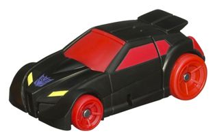

Allegiance : Autobot
Size : Legend
Difficulty of Transformation : Very Easy
Color Scheme : Sparkly dull yellow, black, and some metallic light silvery blue and silver
Individual Rating : 7.5
 Bumblebee
vs. Shadow Striker {RotF Legends Vs. Pack} (Target Exclusive)
Bumblebee
vs. Shadow Striker {RotF Legends Vs. Pack} (Target Exclusive)
Set Price
: $10 (U.S.)
Overall Rating:
7.8
 Bumblebee
Bumblebee
Allegiance
: Autobot
Size
: Legend
Difficulty of Transformation
: Very
Easy
Color Scheme
: Sparkly dull yellow,
black, and some metallic light silvery blue and silver
Individual Rating
: 7.5
(NOTE: Because this is a repaint, this is not a full-blown review. This mainly covers any changes made to the mold and the color scheme, and merely compares it to the original RotF Legends class Bumblebee. For a review on the mold itself, read the review of the original RotF Legends class Bumblebee here .)
Hey, look another Legends
class Bumblebee that's barely been changed. Yay. Compared to the original,
this one has an extra outline around the two main stripes in vehicle mode,
and an Autobot in the middle of the two said stripes. He also has some
rather nifty thinner stripes containing some "Cyberglyphics" on the sides.
It's not all good, though-- the color of the windows has been changed to
a metallic light silvery blue. It's not a bad color-- it's what usually
is used for painted windows on Transformers, after all-- but it doesn't
contrast quite as much with the dull yellow, so it doesn't stick out as
much as the dark blue on the original Rotf Legends Bumblebee did.
No mold changes have
been made to this version of Bumblebee.
Shadow
Striker

Allegiance
: Decepticon
Size
: Legend
Difficulty of Transformation
: Very
Easy
Color Scheme
: Black, moderately
dull red, and some pale yellow and metallic gold
Individual Rating
: 8.1
(NOTE: Because this is a repaint, this is
not a full-blown review. This mainly covers any changes made to the mold
and the color scheme, and merely compares it to
Universe 2.0 Wheelie. For a review on the
mold itself, read the review of Universe 2.0 Wheelie
here
.)
Well, this is certainly
an unusual repaint-- it's a "regular" store release of a character that
had previously only been an
OTFCC exclusive
!
Yup, Wheelie's repaint is a femme-bot, and it oddly enough works. The head
design is actually surprisingly close with the face painted gold and the
eyes painted red like they are. And the overall figure of the toy, while
not outright feminine, isn't exactly obviously masculine, either-- just
like the original Shadow Striker, too. The overall color scheme of the
toy is pretty eye-catching for a figure this small, particularly in vehicle
mode-- black and red are hardly ever a bad combination for a Decepticon,
and this toy isn't any exception. The WHEELS being red is a bit much, though.
In addition, Shadow Striker is really, really lacking some paint apps in
robot mode-- her head's painted up all nicely, and the headlights on the
abdomen are also painted a nice yellow, but there is ZERO paint on her
arms and legs, making her look a little boring in that mode. Adding just
a little more gold in robot mode-- or perhaps, hearkening back to her original
version, some teal-- would've done some wonders.
No mold changes have
been made to RotF Shadow Striker.
This set, mold-wise , is definitely the best of the three Target Exclusive N.E.S.T. Global Alliance two-packs. Both of the included TFs are definitely pretty good Legends molds, and a Shadow Striker homage from Wheelie is pretty nice and unexpected while also utilizing a good color scheme. If it was just Shadow Striker I'd wholeheartedly recommend this set, despite the lack of paint apps in her robot mode-- however, the set comes with yet ANOTHER hardly-changed Bumblebee redeco, which pretty much any movie-collecting Transfan has some version of by this point. In that case, it's a bit hard to essentially recommend Shadow Striker for $10 unless you are just really a fan of the character or something. But if you don't have Legends Bumblebee for whatever reason, then by all means, pick these guys up.
Review by Beastbot
(Vehicle mode pics from Hasbro .)